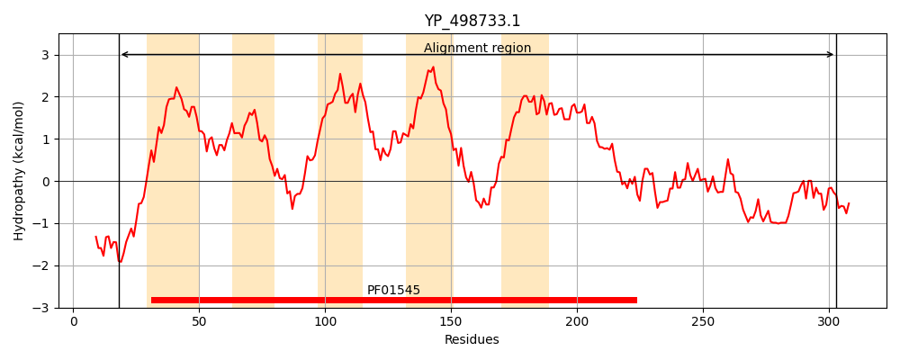
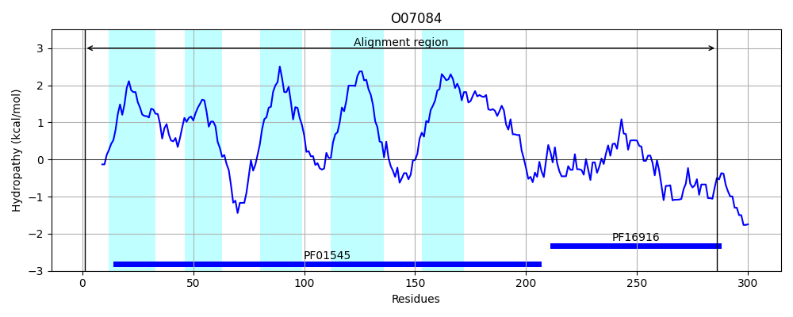
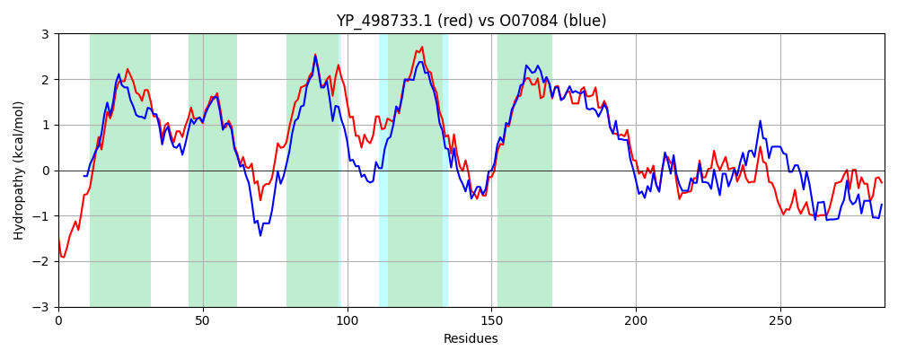

Hit Accession: O07084
Hit TCID: 2.A.4.1.3
Hit Description: gnl|BL_ORD_ID|6786 gnl|TC-DB|O07084|2.A.4.1.3 Cation transport protein YRDO - Bacillus subtilis.
Mach Len: 286
e:0.000000
Query TMS Count : 5
Hit TMS Count: 5
TMS-Overlap Score: 4.950000
Predicted Substrates:CHEBI:3290;cadmium(2+), CHEBI:10113;zinc(2+), CHEBI:8345;potassium(1+), CHEBI:5584;hydron
BLAST Alignment:
Score: 577 , Bit scores: 226 bits, E-value: 9.0e-73, Alignment length: 286, Percentage identity: 40
Query: 18 VNHQKIQQSSKKTLWASLIITLLFTVIEFVGGLVSNSLALLSDSFHMLSDVLALGLSMLAIYFASKKPTARYTFGYLRFEILAAFLNGLALIVISIWILYEAIVRIIYPQPIESGIMFMIASIGLLVNIILTVILVRSLKQEDNINIQSALWHFMGDLLNSIGVIVAVVLIYFTGWRIIDPIISIVISLIILRGGYKITRNAWLILMESVPQHLDTDQIMADIKNIDGILDVHEFHLWSITTEHYSLSAHVVLDKKYEGDDYQAIDQVSSLLKEKYGIAHSTLQIE 303
+ H + ++KK L S I+ + +IE +GG ++NSLALLSD+ HMLSD ++L ++++A A KK TFGY RFEILAA +NG ALI+IS++I+YEAI R P + + M I+ IGL+VN+++ I++ ++N+NI+ A H + D+L S+G I+A +LI F GW DP+ SI++++++LR GY +T+++ ILME P+++D I+ I+ +GI ++H+ H+WSIT+ +LS H V+D + + + I + E GI H T+Q+E
Sbjct: 1 MGHNHNEGANKKVLLISFIMITGYMIIEAIGGFLTNSLALLSDAGHMLSDSISLMVALIAFTLAEKKANHNKTFGYKRFEILAAVINGAALILISLYIIYEAIERFSNPPKVATTGMLTISIIGLVVNLLVAWIMMSGGDTKNNLNIRGAYLHVISDMLGSVGAILAAILIIFFGWGWADPLASIIVAILVLRSGYNVTKDSIHILMEGTPENIDVSDIIRTIEGTEGIQNIHDLHIWSITSGLNALSCHAVVDDQLTISESENILRKIEHELEHKGITHVTIQME 286 | Protein Hydropathy Plots: |
|---|
|  |  |
Pairwise Alignment-Hydropathy Plot:
|
|---|
|  |